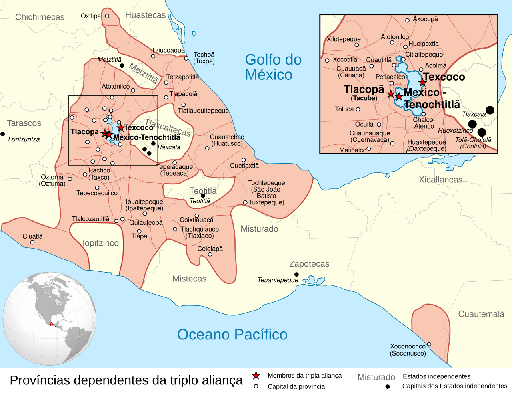
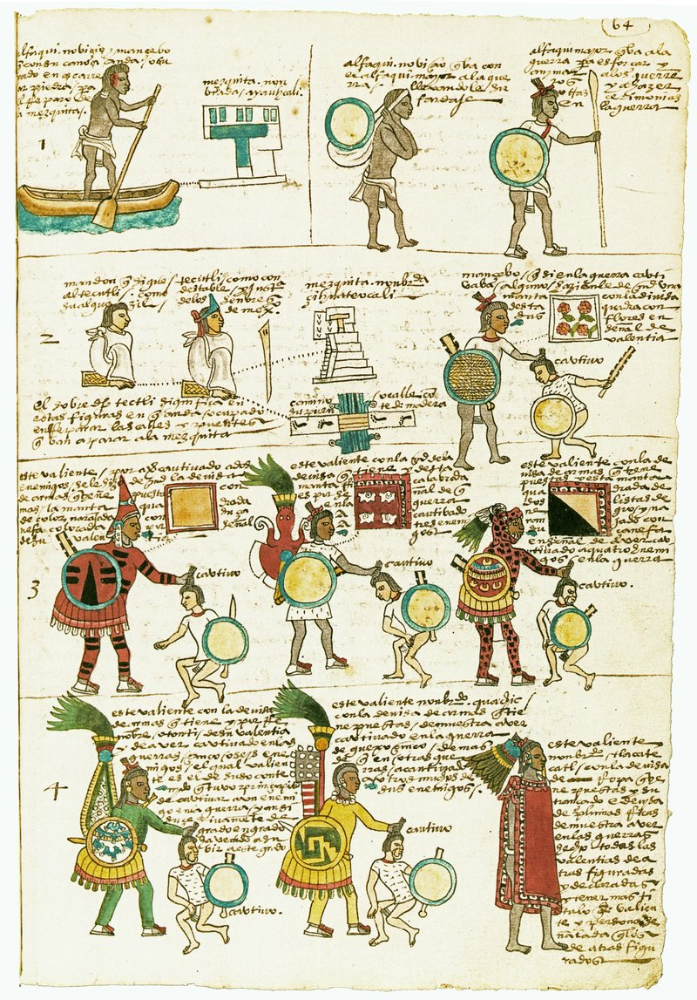
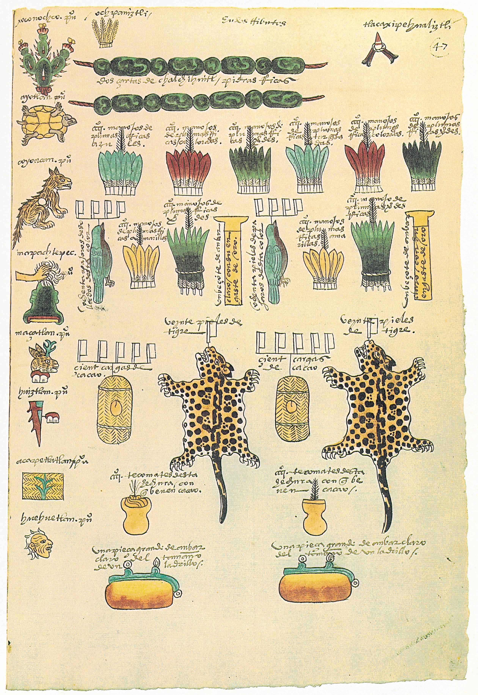
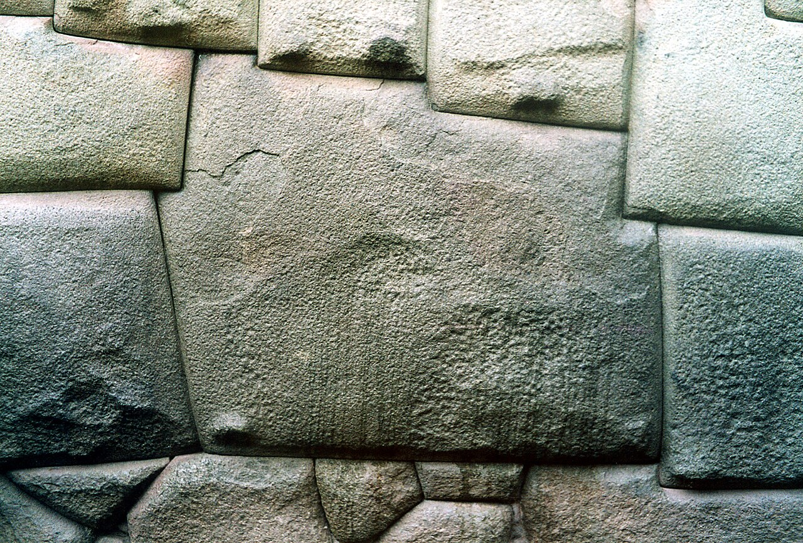
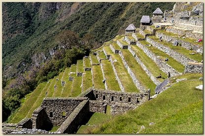
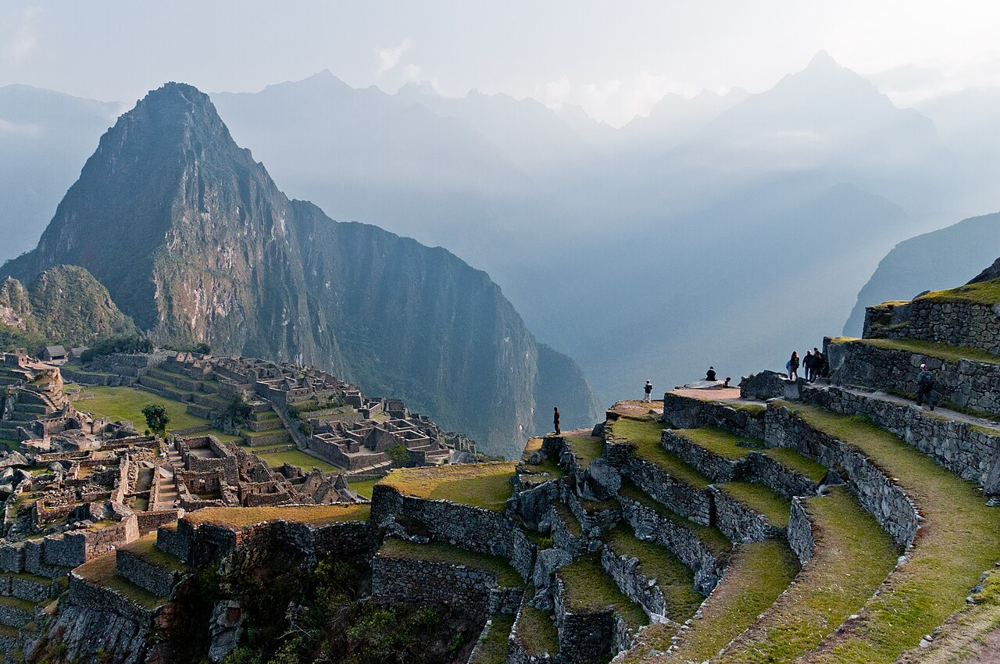
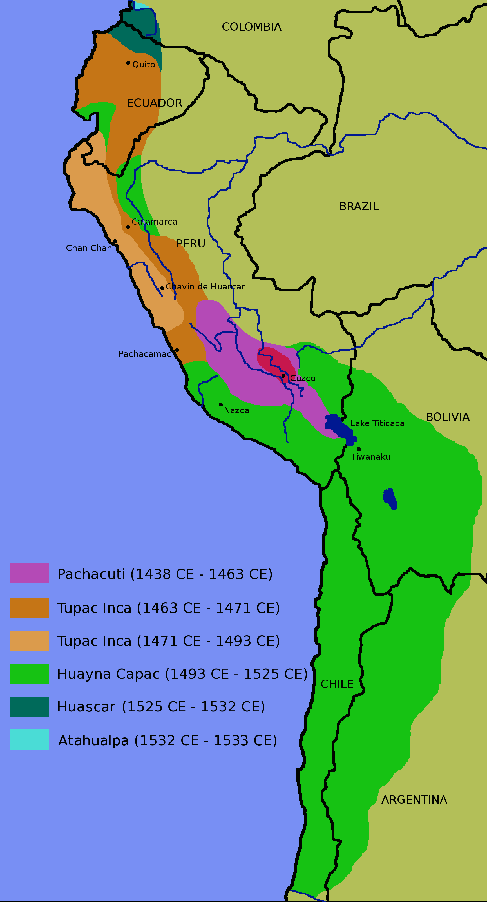

Aula 3
Aula 3Conclusão: sociedades mexicas e incas
Aula 3Acesse os slides da Aula 3
Abra a apresentação no celular e acompanhe no seu ritmo.
Aula 3Objetivos da aula
- Concluir o estudo da expansão e tributação do Estado mexica.
- Introduzir as sociedades andinas anteriores a 1532.
- Caracterizar o Império Inca e sua expansão.
Aula 3Percurso da aula
- Expansão do Estado mexica em 1519: tributação e códices.
- Sociedades andinas antes de 1532: ocupação, organização social e padrões pré-incaicos.
- Império Inca: expansão, Tawantinsuyu e impactos.
- Síntese: mexicas e incas como Estados em expansão.
Aula 3Cronologia Mexica
- 1325–1425: mexicas subjugados ao domínio tecpaneca, devendo tributos e serviços.
- 1426–1430: vitória mexica sobre os tecpanecas; consolidação dos pipiltin e caminho para a expansão militar.
- 1430–1519: expansão militar com força bélica e "destino manifesto" sobre povos de diferentes etnias.
Aula 3Fontes e historiografia
- Fontes: registros de missionários, funcionários e militares europeus, além de escritos indígenas e de seus descendentes.
- Da interpretação eurocêntrica (cronistas e séc. XIX) ao revisionismo (Morgan, Bandelier), à análise marxista (Carrasco) e à virada sociocultural (León-Portilla, Duverger, Gruzinski).
Aula 3
Aula 3Ascensão social
"Plebeu" ascendendo socialmente através da captura de prisioneiros de guerra.

Aula 3
Aula 3Sociedades Andinas antes de 1532
Base: Murra (2004), pp. 63–100.

Aula 3John Murra
Antropólogo que estudou a etnologia histórica dos Incas; grande autoridade nos estudos andinos.
La organización económica del Estado Inca (1ª ed. 1977; tese de 1955, Universidade de Chicago).
 Aula 3
Aula 3Observações dos quinhentistas
- Paisagem única.
- Riqueza material, populacional e tecnológica: irrigação, edificações, metalurgia, estradas e produtos têxteis.
- Domínio político recente dos incas na região (três ou quatro gerações).
Aula 3A ocupação do território andino
- Pisos ecológicos: grande variação de altitude em extensão reduzida.
- Agricultura: tubérculos, coca, cereais e milho.
- Controle vertical dos pisos ecológicos: colonização dispersa em "ilhas" — um arquipélago.
Aula 3
Aula 3Ayllu
"A população andina vivia em uma multiplicidade de pequenas coletividades agropastoris (...) Cada aldeia era habitada por um conjunto de famílias unidas por laços de parentesco ou aliança, que representava um ayllu."Henri Favre. A civilização Inca. Rio de Janeiro: Jorge Zahar Editor, 2004, p. 29–30.
Aula 3Kuraka
"As células domésticas constitutivas do ayllu reconheciam um chefe ou Kuraka que era geralmente o fundador do grupo. O kuraka distribuía as terras, organizava os trabalhos coletivos e regulava os conflitos."Henri Favre. A civilização Inca. Rio de Janeiro: Jorge Zahar Editor, 2004, p. 30–31.
Aula 3Waka
"(...) Divindade tutelar do [ayllu] que era em geral um ancestral do kuraka e na qual este se apoiava para exercer sua autoridade."Henri Favre. A civilização Inca. Rio de Janeiro: Jorge Zahar Editor, 2004, p. 30–31.
Aula 3Terra
Terra era coletiva, com lotes divididos por famílias no interior de cada Ayllu. O kuraka buscava garantir que cada família tivesse acesso a todos os pisos ecológicos — o acesso à terra como complementariedade vertical para subsistência.
Aula 3Trabalho e tributo
- Sistema redistributivo e de reciprocidade: todos os membros do Ayllu deveriam trabalhar para o kuraka e a waka.
- O serviço prestado em forma de trabalho era chamado de mita.
Aula 3Redistribuição e incorporação
Cabia ao Kuraka redistribuir em produtos o trabalho que recebia, garantindo subsistência e reprodução da comunidade em momentos de crise, e sua posição de prestígio e poder.
Todos esses padrões (Ayllu, Kuraka, Waka, ocupação em arquipélago, Mita, redistribuição) serão incorporados pelo Império Inca em sua expansão política e militar.
Aula 3O Império Inca

Aula 3
Aula 3A formação do Tawantinsuyu
- Cusco foi fundada por Manco Capac (c. 1200) após décadas de migrações. A cidade-Estado consolidou seu poder no vale.
- Com Viracocha Inca, fundou-se o Tawantinsuyu em 1438 e iniciou-se a expansão militar com justificativa cultural: "missão civilizadora".
Aula 3A expansão Inca
- Os sucessos militares no vale de Cusco causaram desequilíbrio regional. As reações a essa hegemonia levaram a novas guerras e conquistas.
- Em menos de 100 anos o império atingiu aproximadamente 950 mil km².
- Quanto maior o império, mais as guerras externas eram necessárias para a estabilidade interna.
Aula 3O papel da guerra de conquista
"A guerra de conquista constituía um fator essencial de integração e de mobilidade social dentro do Império. Ela representava o projeto coletivo que confederava os povos vencidos e subjugados. A realização de tal projeto era bastante lucrativa para tornar tangível aos olhos destes últimos as vantagens da dependência em que seriam mantidos."Henri Favre. A civilização Inca. Rio de Janeiro: Jorge Zahar Editor, 2004, p. 26.
Aula 3O Domínio Inca e os impactos
- O Império Inca utiliza a mesma estrutura tradicional da região, mas impõe novos sentidos a ela.
- O uso da mita é ampliado enormemente: implementada em diversas funções, os trabalhadores são enviados para regiões cada vez mais distantes. Isso enfraquece as chefias locais e o sistema de reciprocidade, garantindo renda e poder diretamente ao Estado Inca.
Aula 3Estados em expansão
Ambos implementavam uma política expansionista, controlando e subjugando comunidades na Mesoamérica e na Região Andina. Esse domínio mesclava diplomacia, ameaça de invasão militar e guerras.
Aula 3Estados em expansão
Às vésperas da chegada dos espanhóis, mexicas e incas controlavam centenas de comunidades, cobrando tributos — em produtos (Mexicas) ou em trabalho (mita, entre os Incas) —, e mantendo controle político e militar rígidos. O que geraria insatisfação e traria consequências profundas para o futuro desses Estados.
Aula 3Referências
NARDI, Tawnne T. de A. "Mesoamérica, Mexicas e Tlapanecas". In: O império mexica e a província de Tlapa: relações políticas e tributárias nos códices mesoamericanos (1461–1521). São Paulo: Universidade de São Paulo, 2019, pp. 25–54.
MURRA, John. "As sociedades andinas anteriores a 1532". In: BETHEL, Leslie (org.). História da América Latina: América Latina Colonial. São Paulo: Edusp, 2004, pp. 63–100.
Aula 3As várias visões da conquista
Módulo II — Sociedade colonial e resistências indígenas.